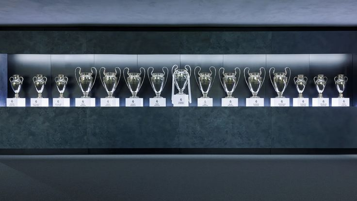
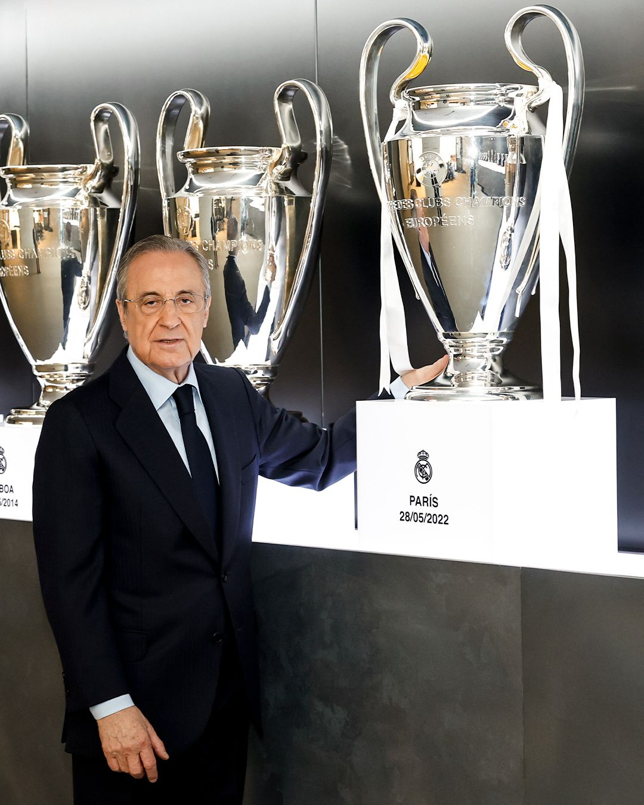
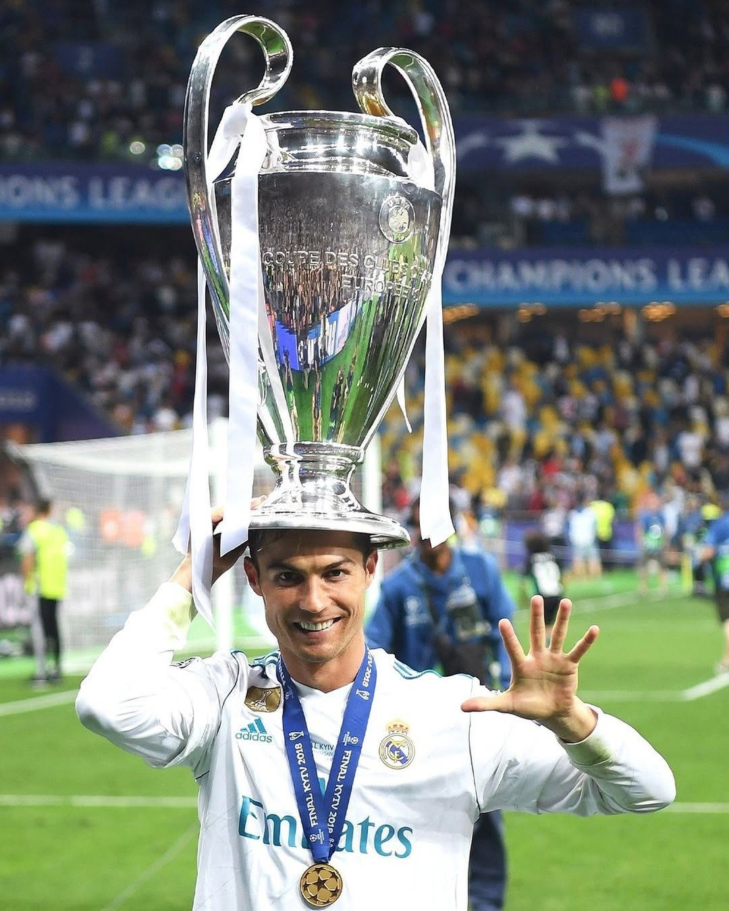
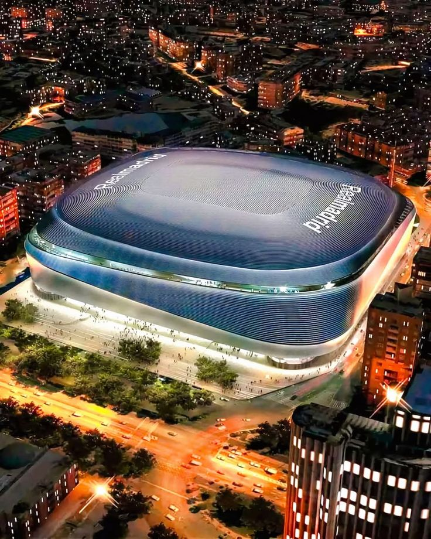

Real Madrid – UEFA Champions League Titles
Real Madrid is the most successful club in the history of the UEFA Champions League. The club has won the competition 15 times. Real Madrid first dominated the tournament .
1956 – PARIS
1957 – MADRID
1958 – BRUSSELS
1959 – STUTTGART
1960 – GLASGOW
1966 – BRUSSELS
1998 – AMSTERDAM
2000 – PARIS
2002 – GLASGOW
2014 – LISBON
2016 – MILAN
2017 – CARDIFF
2018 – KYIV
2022 – PARIS
2024 – WEMBLEY
🏆 Total: 15 Champions League titles

Florentino Pérez
Florentino Pérez is one of the most influential presidents in the history of Real Madrid. Born in Madrid, he is known for his strong leadership, business mindset, and ambitious vision that transformed the club into a global powerhouse. Florentino Pérez first became president of Real Madrid in 2000 after defeating Lorenzo Sanz in the elections. During this period, he launched the famous “Galácticos” project, signing world-class players such as Zinedine Zidane, Ronaldo Nazário, and David Beckham. These signings increased both the team’s success and its global popularity. He resigned in 2006 but returned to the presidency in 2009, beginning a new era of dominance. Under his leadership, Real Madrid achieved remarkable success, especially in the UEFA Champions League. During his time as president, Florentino Pérez has won numerous titles with Real Madrid, including: 6 La Liga titles 3 Copa del Rey trophies 7 Supercopa de España titles 6 UEFA Champions League titles 5 UEFA Super Cup titles 5 FIFA Club World Cup titles In conclusion, Florentino Pérez is considered one of the greatest presidents in football history. His ability to combine financial strategy with sporting success helped Real Madrid remain one of the best clubs in the world.

Cristiano Ronaldo
Cristiano Ronaldo is a true legend of Real Madrid and one of the greatest players in football history. He joined the club in 2009 from Manchester United and became the all-time top scorer with more than 450 goals. During his time with Real Madrid, he helped the team win many trophies, including 4 UEFA Champions League titles (2014, 2016, 2017, 2018).

Santiago Bernabéu
The Santiago Bernabéu Stadium is the home stadium of Real Madrid, located in Madrid. It was opened in 1947 and named after Santiago Bernabéu. The stadium is one of the most famous in the world and has hosted many important matches, including finals of the UEFA Champions League. In recent years, the stadium underwent major renovations, which were largely completed around 2023–2024, making it more modern with advanced technology and a new retractable roof. Today, the stadium has a capacity of about 81,000 spectators. It remains a powerful symbol of Real Madrid’s history, success, and global prestige.

Historic 2024 Season of Real Madrid – UEFA Champions League Final 2024
The 2023–2024 season was a historic one for Real Madrid, ending with their 15th UEFA Champions League title. The final was played at Wembley Stadium against Borussia Dortmund. The match was very intense, especially in the first half, where Dortmund created many dangerous chances, but Real Madrid’s defense and goalkeeper Thibaut Courtois made crucial saves. In the second half, Real Madrid showed their experience and strength. The first goal was scored by Dani Carvajal in the 74th minute with a powerful header from a corner. Shortly after, in the 83rd minute, Vinícius Júnior scored the second goal after a great team play, securing the victory. Throughout the tournament, several players played key roles. Jude Bellingham was outstanding in midfield, while Rodrygo and Vinícius were decisive in attack. The coach Carlo Ancelotti managed the team perfectly, leading them to another European triumph. This season confirmed Real Madrid’s dominance in Europe and showed once again why they are the kings of the Champions League.